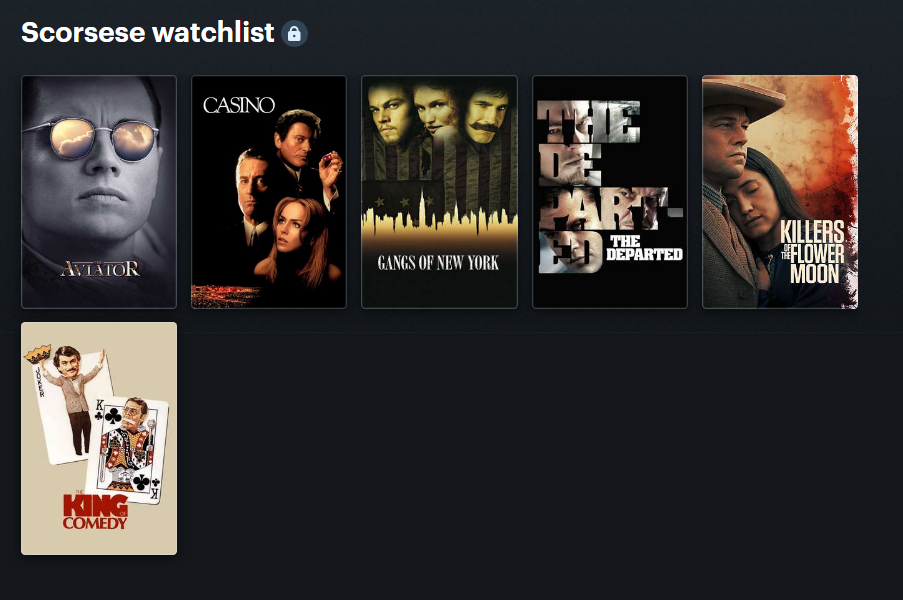
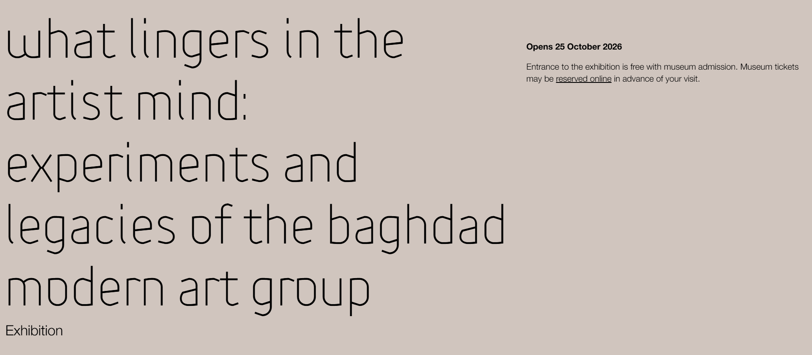
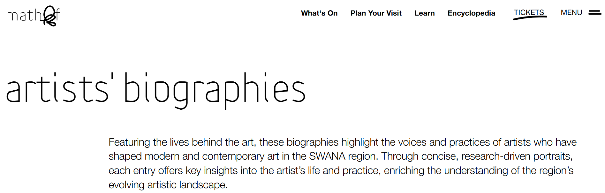
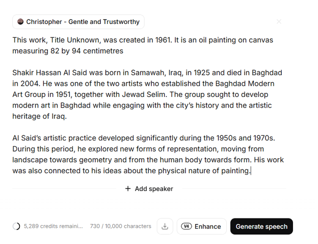
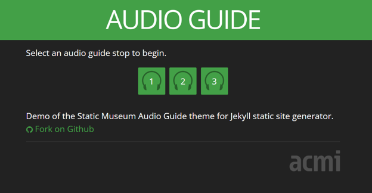
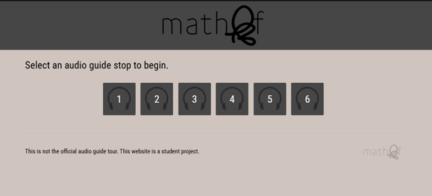
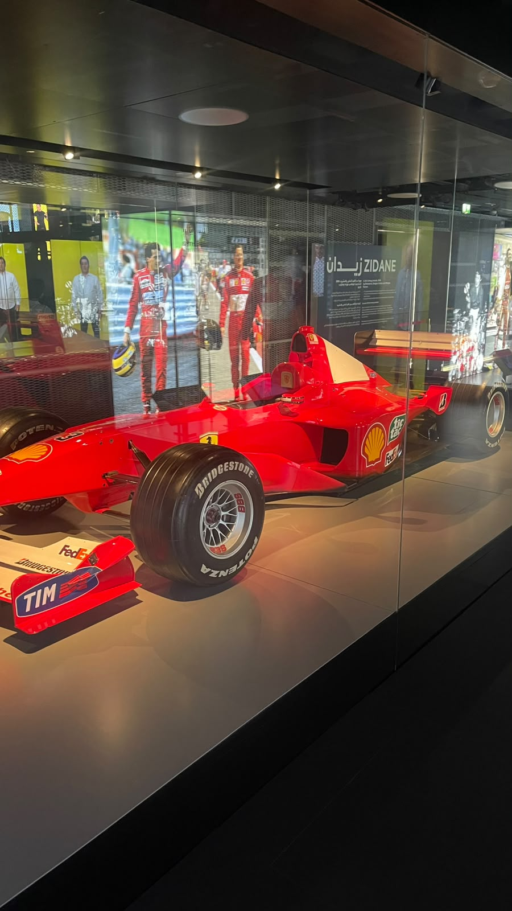

This week, I worked on creating audio guide for a fictional exhibition by forking the Australian Center for Moving Image’s (ACMI) open-source repository. ACMI originally built an audio tour centered around Martin Scorsese, one of cinema's best directors, and personally one of my all-time favorites (I’ve watched six of his feature films so far and wanting to watch at least six more).

To start with I needed an idea for the audio guide. I noticed mathaf has an upcoming exhibition on Bagdad modern art titled "What Lingers in the Artist Mind: Experiments and Legacies of the Baghdad Modern Art Group" opening on 25th of October which I think would be the perfect opportunity to create an audio tour around it.

While looking at the source code, I got a general understanding of how the project works. I really appreciated that the original project relied purely on HTML, CSS, and JavaScript without unnecessary complexities, it serves its purpose perfectly and remains functional to this day. After cloning the repository to build my custom version, I structured the tour into six distinct stops:
For the tour content, I needed source material to feed into my text-to-speech engine. I used the mathaf page about the Bagdad group as my resource, but I needed more information about the artists, hence I used the biography pages that are in mathaf website, which was rich source of information about the Bagdad group.

After writing the script for the audio guide, I used ElevenLabs to test different AI voices and find one that sounded natural and suited a museum narrative. After listening to many voices, I chose "Christopher," which sounded the most human and fit the tone of the guide. The text-to-speech generation process was straightforward.

Generating the Arabic version was surprisingly good, though it had a few pronunciation flaws. In Arabic, diacritics (tashkeel) alter word meanings, and the AI did struggle to pronounce some words correctly without vowel markings. I tested Google AI Studio as well but ran into similar challenges with Arabic pronunciation accuracy.
For the website styling, I made a lot of modifications to match mathaf visual identity and coloring. I was searching for a high-resolution mathaf logo but I couldn't find a clean version. I solved this by copying the outerHTML of the logo, and saving it as an SVG file and I got the logo.


To manage both English and Arabic speakers, I translated all the text and added a language selector. This feature allows users to set their preferred language once and seamlessly maintain that choice as they navigate across all six stops.
We visited the 3-2-1 Qatar Olympic & Sports Museum, which for me has been the best museum so far. I found the interactive activities engaging, and the sheer volume of exhibits. The football section was a bit smaller than I expected but I didn’t expect to see Michael Schumacher's real Formula 1 car. It so well-designed and engineered that I am definitely going back just to admire it again. The interactive physical games at the end were really fun, although the instructions were slightly confusing at first but once you try how it works, they are easy to play with.
